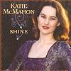

Celtic Lyrics Corner > Artists & Groups > Katie McMahon > Shine > Slievenamon
|  | Slievenamon |
| Credits : | Traditional; arranged by Katie McMahon |
| Appears On : | Shine |
| Language : | Gaeilge (Irish Gaelic) |
| Other Versions : | " Sliabh Na mBan " by Brendan Begley on the Gaelic Ireland compilation |
| Lyrics : | English Translation : |
| Is oth liom féinig bualadh an lé úd | I lament for the defeat of that day |
| Do dhul ar Ghaeil bhochta is na céadta slad | On the poor Irish with hundreds slaughtered |
| Mar tá na méirligh ag déanamh game dinn | For the villains all making game of us |
| Á rá nach aon ní leo pike nó sleá | Saying they don't mind pikes or spades |
| Níor tháinig ár major i dtús an lae chugainn | Our major never came to us at dawn |
| Is ní rabhamar féin ann i gcóir ná i gceart | So we were not properly ready or prepared |
| Ach mar sheolfaí aoireacht bó gan aoire | But like a herd of cattle with no herdsman |
| Ar thaoth na gréine de Shliabh na mBan | On the sunny side of Slievenamon |
| Mo léan léir ar an dream gan éifeacht | My complete sorrow for that crowd with no wisdom |
| Nár fhan le héirim is d'oíche stad | Who didn't wait for the horsemen and the night's end |
| Go mhéadh dúiche Déiseach is Iarthar Éireann | So the hosts of South Munster and West Ireland |
| Ag triall le chéile ón tír aneas | Could gather together from the southern lands |
| Bhéadh ár gcampaí déanta le fórsaí tréana | Our camps would have been full of powerful forces |
| Bhéadh cúnamh Dé linn is an saol ar fad | We would have had the help of God and the whole world |
| Is ní dhíolfadh méirleach roimh theacht an aoire | And the villain would not have betrayed us before the herdsman came |
| Ar thaoth na gréine de Shliabh na mBan | On the sunny side of Slievenamon |